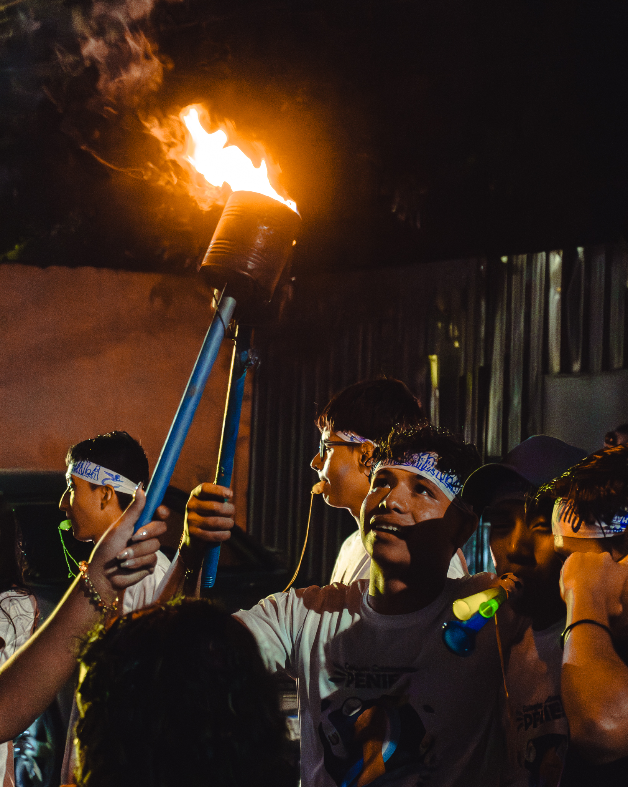

Colegio Cristiano Peniel
"Este mes patrio recuerda que tu valentía y tus sueños son el motor que mueve a Guatemala hacia adelante"
Les recordamos que este 7 de septiembre se llevará a cabo el emocionante recorrido de la antorcha en honor a nuestras Fiestas Patrias. Nos llena de orgullo que todos podamos ser parte de este evento tan especial.¡No te lo pierdas! Llena de energía tu espíritu patriótico y únete a nosotros en esta celebración de unidad y orgullo nacional. Corre, disfruta y vive este momento con nosotros.
